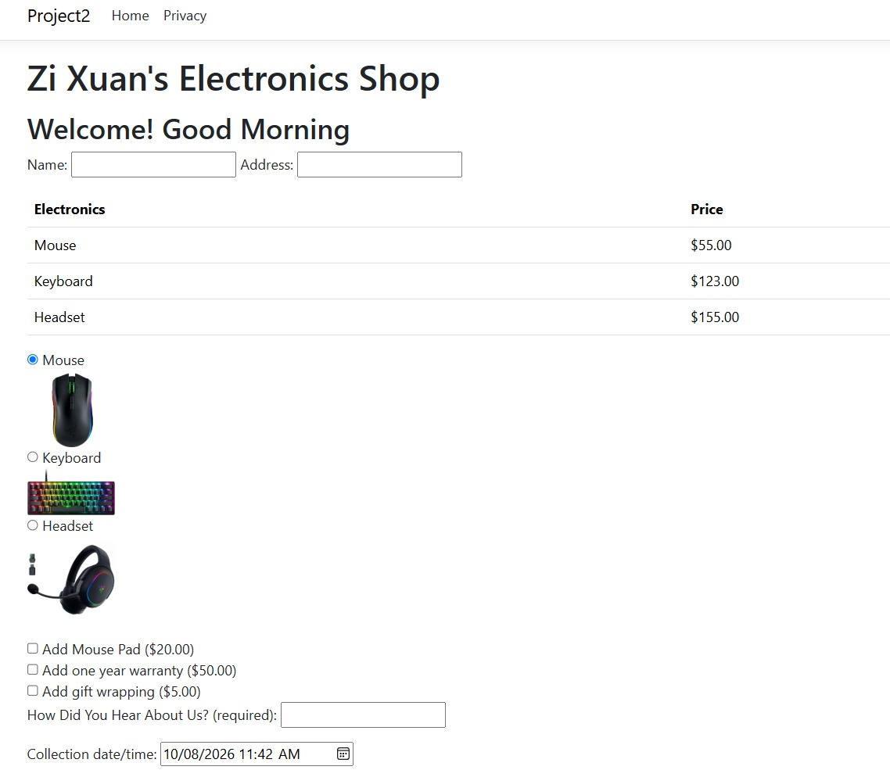

Electronic & Computer Engineering Student in Ngee Ann Polytechnic.
Pet me!
Fish: 0
LV 1About
I am graduating in 2027 with a Diploma in Electronic & Computer Engineering from Ngee Ann Polytechnic, with a focus on embedded systems, software development and IoT.
I enjoy applying what I learn to hands-on engineering projects. My experience includes C, C#, Python, Microcontrollers, Sensors and Cloud-connected Systems.
Outside my studies, I am actively involved in Ten-Pin Bowling and the SOE Peer Helpers Club, which have strengthened my teamwork, communication and leadership skills. I also volunteer and advocate for the welfare of cats.
Tools and languages
C
C#
Python
ASP.NET Core Razor Pages
Microcontrollers
Sensors
Node-RED
Ubuntu
LV 2Projects
In progress
Mini Urban Farming Project
An indoor farming system that combines a Node-RED control dashboard with a Python computer vision application for monitoring plant leaves. I am currently debugging and improving both the control and vision components.
Resolved Node-RED control faults such as intermittent water pump and leak sensor through debugging.
Developing an improved plant leaf detection model, with a calibration system for colour masking, white balancing and HSV tuning.
Plant Health Camera with Leaf Detection and HSV Calibration
Autonomous Navigation in Unknown Factory Environments
An autonomous navigation system for a simulated factory environment, developed with ROS 2 and a TurtleBot.
Built a simulated factory in Gazebo and wrote Python code for a TurtleBot to navigate autonomously to specified locations.
Used Cartographer SLAM for mapping and Nav2 for path planning, adapting to walls and unexpected obstacles, with RViz2 for visualisation and debugging.
The Simulated Factory in Gazebo
Binary Race
A two-player digital logic game where players race to enter the binary equivalent of a decimal number shown on a 7-segment display. The first correct answer scores a point, and scores reset after five rounds.
Built with 74HC series logic ICs (counter, comparator, adder and priority encoder), with the circuit drawn in TINA and wired on breadboards as a team.
I designed the Masterset, which covers the decimal controller and load conditions, and helped troubleshoot wiring and faulty components.
The Binary Race Circuit
Electronics Shop Web App
A web ordering page for an electronics shop, built with ASP.NET Core Razor Pages and C#. Customers pick a product, choose optional extras and book a collection time.
Built an order form with a time-based greeting, a price table for the mouse, keyboard and headset, and radio buttons with product images for selecting an item.
Added optional extras (mouse pad, one year warranty and gift wrapping), a required "How Did You Hear About Us?" field and a collection date/time picker.

The Electronics Shop Order Page
Geometry Calculator
A menu-driven command-line program in C that calculates the area and perimeter of common 2D shapes.
Built a looping menu that lets the user choose between a square, circle, rectangle, triangle or trapezium, then calculate either area or perimeter, repeating until they quit.
Added input validation to re-prompt on negative values, used helper functions for the menu and invalid-input handling.
The Geometry Calculator
LV 3Education and Achievements
Education
Ngee Ann Polytechnic, Diploma in Electronic & Computer Engineering
Diploma Plus Programme in Advanced Engineering Math. Minor in Applied Psychology.Apr 2024 to Mar 2027
Leadership
Publicity Head, Ten-Pin Bowling2026 to 2027
Publicity Head, SOE Peer Helpers2025 to 2026
Makers Subcommittee Member, Makers Guild2025 to 2026
Awards
Edusave Merit Bursary
Top 25% of the level and course in academic performance.Oct 2025
Director's ListFeb 2025
Special Commendation Sports Team AwardJun 2025
Volunteering
Feline Rescue, Foster and Feeder
I feed community cats, help reunite lost cats with their owners, and foster cats until they find homes. Most recently I fostered an abandoned pregnant cat who gave birth to four kittens. The mother has been adopted and two kittens are awaiting adoption.May 2024 to present
Mathematics Tutor, Bukit Batok Youth Network
Delivered math tutoring sessions and designed structured lesson plans.Jun 2024 to Dec 2025